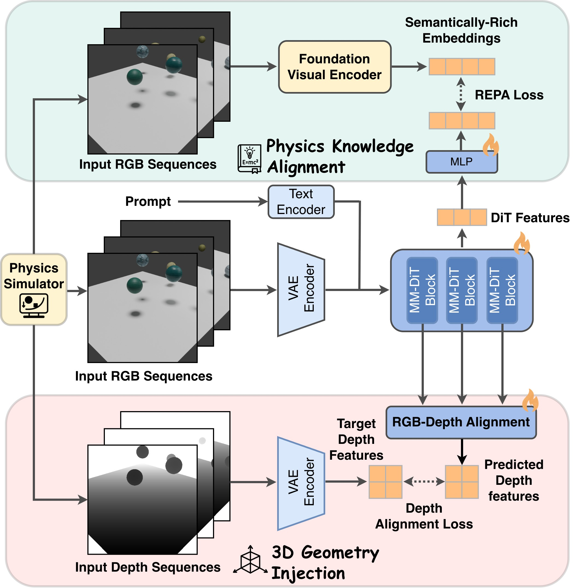

PhysAlign: Physics-Coherent Image-to-Video Generation through Feature and 3D Representation Alignment

Abstract
Video Diffusion Models (VDMs) offer a promising approach for simulating dynamic scenes and environments, with broad applications in robotics and media generation. However, existing models often generate temporally incoherent content that violates basic physical intuition, significantly limiting their practical applicability. We propose \textbf{PhysAlign}, an efficient framework for physics-coherent image-to-video (I2V) generation that explicitly addresses this limitation. To overcome the critical scarcity of physics-annotated videos, we first construct a fully controllable synthetic data generation pipeline based on rigid-body simulation, yielding a highly-curated dataset with accurate, fine-grained physics and 3D annotations. Leveraging this data, PhysAlign constructs a unified physical latent space by coupling explicit 3D geometry constraints with a Gram-based spatio-temporal relational alignment that extracts kinematic priors from video foundation models. Extensive experiments demonstrate that PhysAlign significantly outperforms existing VDMs on tasks requiring complex physical reasoning and temporal stability, without compromising zero-shot visual quality. PhysAlign shows the potential to bridge the gap between raw visual synthesis and rigid-body kinematics, establishing a practical paradigm for genuinely physics-grounded video generation.
Motivation
Current Video Diffusion Models (VDMs) often produce temporally incoherent content that violates basic physical intuition. To address this limitation, we focus on two key dimensions of physical coherence:
- General physical laws: Generated motions should obey fundamental physics—e.g., consistent gravitational acceleration, physically plausible collisions, and momentum-conserving trajectories.
- 3D perceptual fidelity: The generated video should respect 3D spatial structure and perspective, including correct occlusion ordering and size changes as objects move relative to the camera.
Method Overview

Figure 2: PhysAlign Framework. Our data generation pipeline leverages physical simulator (i.e. Blender) to generate synthetic videos with 3D physical ground truth. Our method aligns the DiT latent features with both (i) physical knowledge feature by V-JEPA2, and (ii) 3D geometric feature encoded from synthetic ground truth (e.g., depth). This unified alignment internalizes both physical laws and visual fidelity for I2V generation task.
Synthetic Data with Physics Annotations
Example 1
RGB Video
Depth Map
Example 2
RGB Video
Depth Map
Our synthetic data generation pipeline provides pixel-perfect RGB-Depth paired videos with accurate 3D physical annotations. This enables our model to learn the correspondence between visual appearance and underlying 3D geometry.
Video Comparisons
Side-by-side comparisons of PhysAlign with CogVideoX-5B, Hunyuan I2V, and Wan2.2 across various physics-involved scenarios.
Key Features
- Physics-Coherent Generation: Produces videos that obey fundamental physics laws including consistent gravitational acceleration, physically plausible collisions, and momentum-conserving trajectories.
- 3D Perceptual Fidelity: Respects 3D spatial structure and perspective, including correct occlusion ordering and size changes as objects move relative to the camera.
- Synthetic Data Pipeline: Leverages Blender to generate large-scale synthetic training data with accurate 3D and physical annotations.
- Unified Alignment: Aligns DiT latent features with both physical knowledge features (via V-JEPA2) and 3D geometric features from ground truth.
- SOTA Performance: Significantly outperforms existing VDMs on tasks requiring complex physical reasoning and temporal stability.
BibTeX
@article{xiong2025physalign,
title={PhysAlign: Physics-Coherent Image-to-Video Generation through Feature and 3D Representation Alignment},
author={Xiong, Zhexiao and Song, Yizhi and He, Liu and Xiong, Wei and Yuan, Yu and Jacobs, Nathan},
journal={arXiv preprint},
year={2025}
}